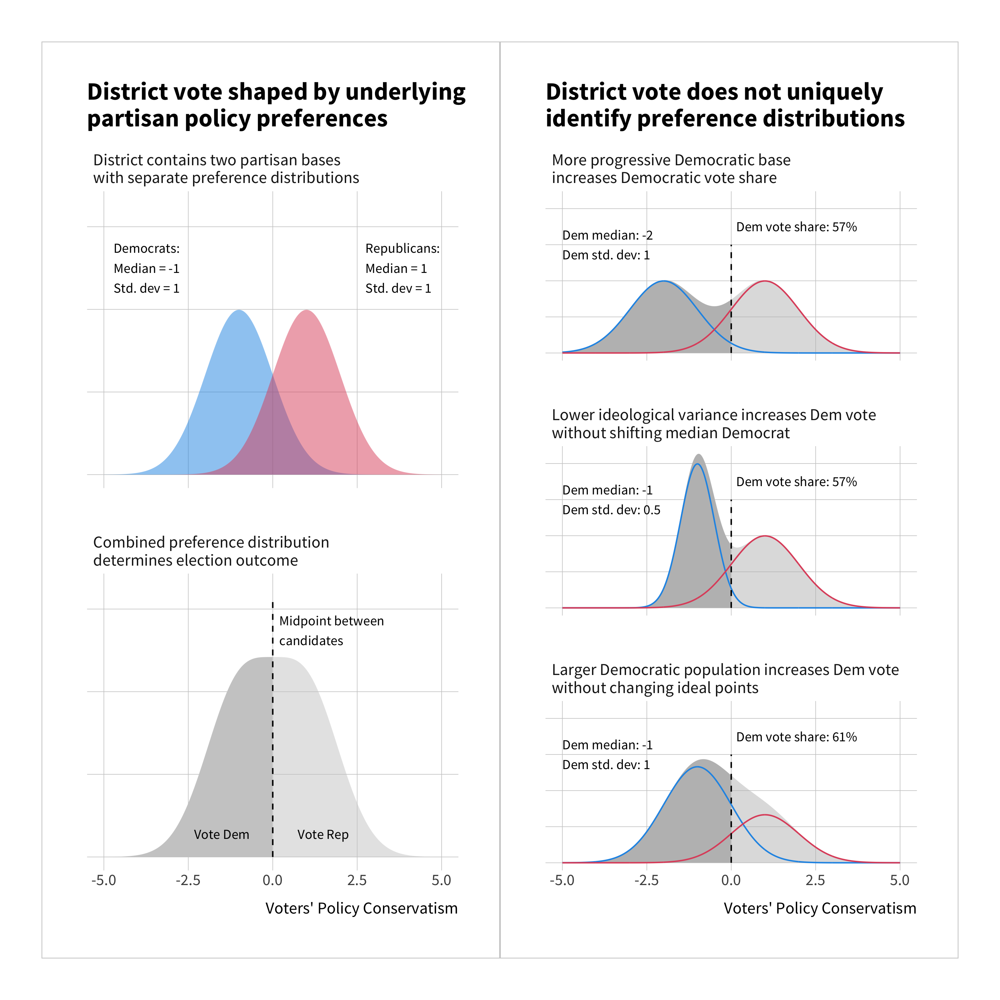

Abstract
As partisanship increasingly drives general election competition in the U.S., party nomination contests seem increasingly important in determining who represents a district in Congress. At the same time, many ideas about how primaries affect representation in the U.S. are not supported by empirical research. Do primary elections faithfully represent the policy preferences of local partisan voters?
Political scientists believe that candidates for office face a trade-off in the way they position themselves ideologically. To win the nomination, candidate must champion their party’s values, but winning the general election requires the support of a broader cross-section of the electorate. Political scientists have called termed this the “strategic positioning dilemma”—the candidate must be partisan enough to win the nomination, but not so partisan that they lose the general election.
This theory of primaries rests on shaky ground both theoretically and empirically. Theoretically, primary elections present voters with high informational demands. Learning the policy positions of different candidates is costly, especially when all candidates share the same party label. Moreover, a candidate’s support among informal networks of party-aligned interest groups may be more important to their nominations than their ideological “fit” with partisan voters in the district. Empirically, research of representation in primaries is held back by a limited understanding of local partisans’ policy preferences. Most existing research measures voters’ preferences using coarse proxies that do not distinguish between Republican and Democratic groups or may not meaningfully capture policy preferences at all.
This dissertation seeks to improve the measurement of the policy preferences of partisan voters at the local level and apply these new measures to the study of representation in primary elections. Along the way, it exposes and clarifies key causal assumptions at work in prior research, and it explores new methodological tools for the statistical analysis of a broader range of causal inference problems in political science.

Goals of this project:
-
Create novel estimates for the policy ideology (ideal points) of partisan groups within Congressional districts—435 districts x 2 parties = 870 groups—using custom Bayesian IRT modeling approach.
-
Apply novel estimates of local partisan preferences to test key theoretical claims about representation in primary elections: does the extremism/moderation of local ideology (X) meaningfully affect the extremism/moderation of primary candidates for Congress (Y1) and the extremism/moderation of the candidate eventually selected to run in the general election (Y2)?
-
Explore a Bayesian framework for causal inference in political science: formal notation, theoretical clarity on the meaning and application of priors, and practical guidance for pragmatic causal inference with Bayesian value-added.
-
Extend Bayesian framework to computational causal inference approaches using machine learning methods, with a focus on structural causal models (DAGs) and neural networks.